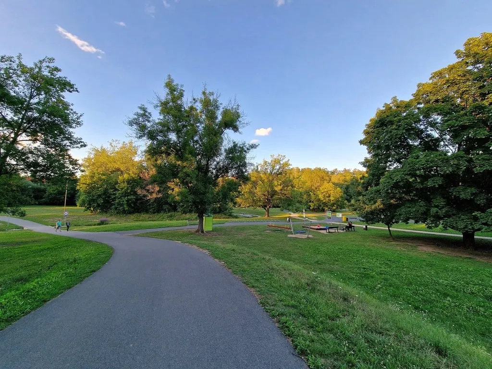
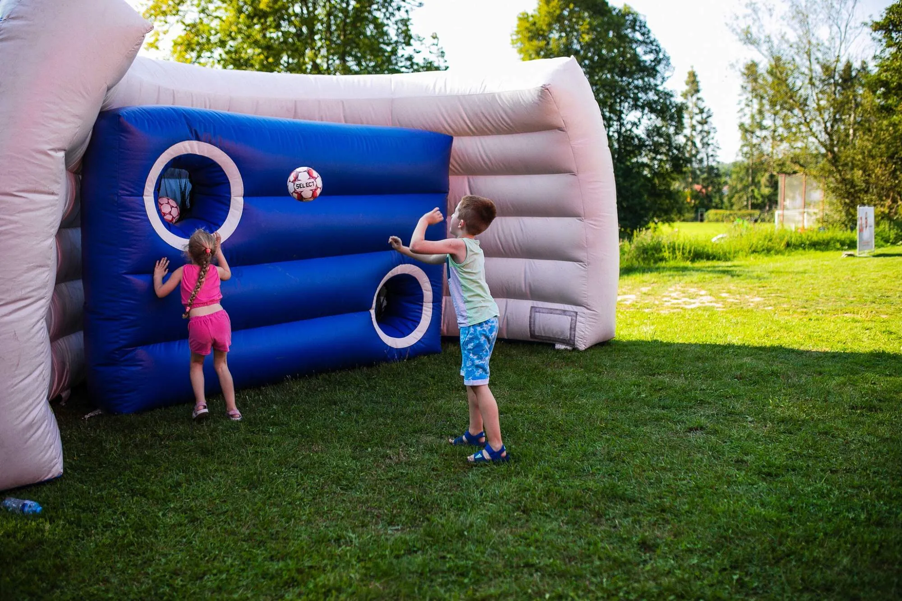
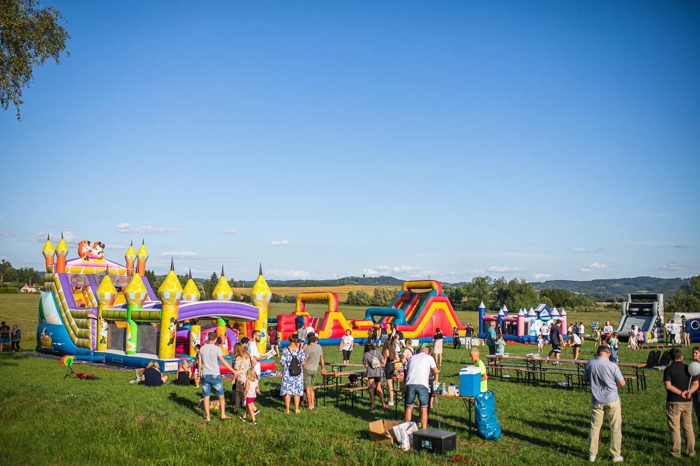
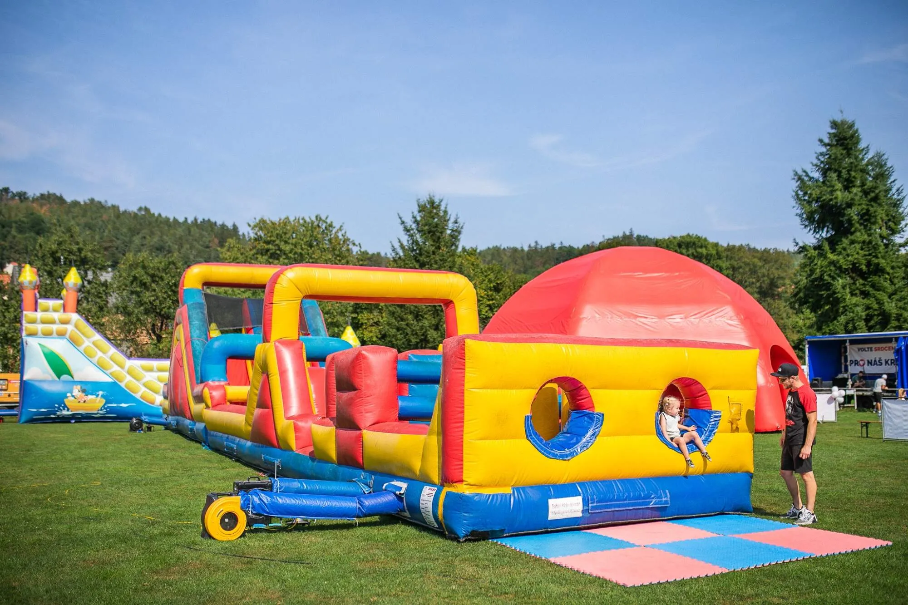
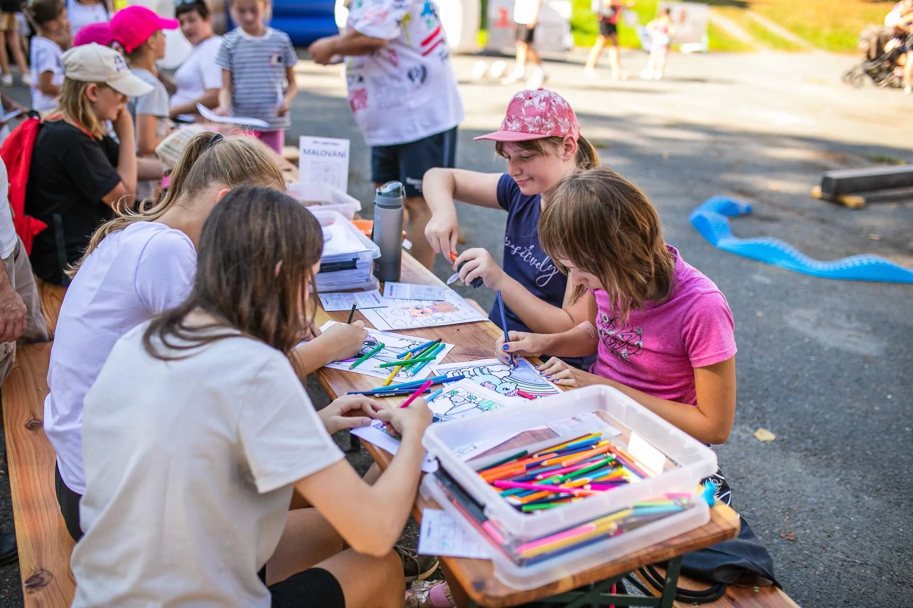

DETAILNÍ INFORMACE O ČTVRTMARATONU

LOKACE ZÁVODU


HARMONOGRAM ZÁVODU PLZEŇSKÝ ČTVRTMARATON V SOBOTU 26.4.2025:
- 8:00 - 9:30 hodin - výdej startovních čísel + registrace na místě
- 9:15 hodin - start dětského závodu na 200 m (děti do 6 let)
- 9:20 hodin - start dětského závodu na 400 m (děti 7 - 10 let)
- 9:25 hodin - start dětského závodu na 500 m (děti 11 - 13 let)
- 9:45 hodin - společná rozcvička před startem závodu na 5 km a čtvrtmaratonu
- 10:00 hodin - start závodu na 5 km
- 10:05 - 10:15 hodin - vyhlášení dětských běhů
- 10:15 hodin - doběh nejrychlejších běžců na 5 km
- 10:30 hodin - start čtvrtmaratonu (10,548 km)
- 11:00 hodin - doběh nejrychlejších běžců na čtvrtmaratonu
- 11:45 hodin - doběh posledního závodníka
- 12:00 hodin - vyhlášení nejlepších běžců na 5 km a čtvrtmaratonu
- 12:30 hodin - ukončení závodu
- 12:30 hodin - vyhlášení výše charitativního příspěvku
- 14:00 hodin - ukončení doprovodného programu




BĚŽECKÉ KATEGORIE:
-
Muži
- do 39 let
- do 49 let
- do 59 let
- nad 60 let
-
Ženy
- do 39 let
- do 49 let
- do 59 let
- nad 60 let
-
Děti
- děti do 6 let - 200 m
- děti 7-10 let - 400 m
- děti 11-13 let - 500 m
Startovné je nevratné, při neúčasti běžce lze po domluvě převést na další ročník běhu nebo bude věnováno na dobročinné účely.
- Cena
- Zvýhodněná cena při registraci do 28.2.
- běh na 5 km - 200,- Kč
- čtvrtmaraton - 300,- Kč
- Registrace od 1.3. do 24.4.
- běh na 5 km - 250,- Kč
- čtvrtmaraton - 350,- Kč
- Registrace na místě v den závodu
- běh na 5 km - 300,- Kč
- čtvrtmaraton - 400,- Kč
- dětské běhy - 30,- Kč
- Registrace na dětské běhy – jednotná cena
- dětské běhy - 30,- Kč
- Startovní balíček
- startovní číslo
- jednorázový čip na závod (kromě kategorie děti do 6 let*)
- účastnický list nebo medaili
- drobné občerstvení po závodu
- věcné ceny pro nejlepší běžce v každé kategorii
*kategorie děti do 6 let poběží závod bez měření času čipovým systémem a drobnou odměnu obdrží všichni závodníci a závodnice v této kategorii
DOPROVODNÝ PROGRAM- skákací hrady, nafukovací atrakce
- stánky s občerstvením
- stánek s běžeckou obuví
- malování pro děti
- ukázky dalších sportů pro děti